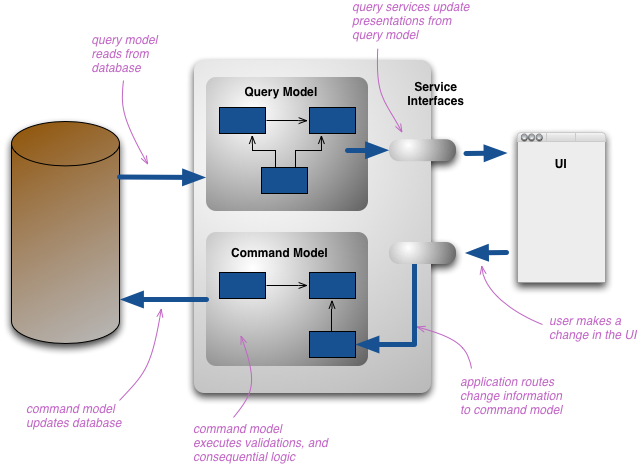

Modern architecture of web application
@KonradKokosa
Wprowadzenie
Google Rail


Było...


#01 Monolit
[ monolit ]


#02 N-tier


#03 Service Oriented Architecture (SOA)

Big Ball of Mud

Architektura:
- ograniczenia naszego umysłu
- zależności
- skalowalność
- ...
Jest...
#03 Hexagonal architecture
aka "Ports and adapters" lub "Onion architecture"
#04 Microservices


Toolbox
Saga
Saga
- Choreografia - rozproszone podejmowanie decyzji
- Orkiestracja - scentralizowane podejmowanie decyzji
- ...
CQRS

https://martinfowler.com/bliki/CQRS.html#07 Event sourcing

#05 Reactive architecture
#06 Actor model
#08 Lambda architecture
early read derivation#09 Serverless
Będzie...?
Strumieniowanie danych
Autonomiczność
Podsumowanie
Dobre intencje

Budujemy katedrę...
Evolutionary architecture
Jedno jest pewne - nastąpi zmiana
Same local images scaled down to demo sitting side by side
Kontrakt
- przerwy - 10 minut
- telefon
- maile
- ...